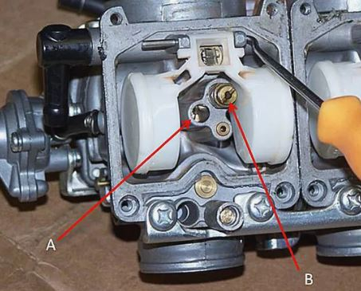

For someone not familiar with working on a carburetor, the notion of dismantling and fixing one can seem daunting. But by following some basic procedures, the task is relatively simple, and it's very rewarding when the bike runs well afterward.
Before working on a carburetor, you must consider a number of precautions. Safety is the first concern. Not only must safety glasses be worn, but safety gloves should be used at all times, as chemicals within gasoline can cause irritation to the skin.
Another precaution is to have the work area well-lit and clean. Cleanliness is important when undertaking all classic motorcycle mechanical work, but is particularly important when dealing with carburetors.
ToolsIn this case, the tools required are of the basic type. However, screw drivers in particular must be in as-new condition as they will be used to remove brass jets, and these can easily be damaged if the driver does not locate well.
Typical Tool Requirements:Screw drivers, straight blade and cross head (sizes one and two)
Standard and metric socket sets
Steel rule (with metric and standard measurement)
Chemicals: WD40 or its equivalent, carburetor cleaner
The carburetor is generally retained by two bolts or a circular clamp on the inlet manifold. You should first turn off the main fuel supply and drain the float chamber (some carburetors have a small screw in the chamber base with a hose for this purpose - see 'A'). On most carburetors, it is easier to remove the control cable and slide (B) after the carburetor has been removed from the engine.
Starting the DisassemblyRemove float chamber. The first part of the disassembly process (assuming the slide has already been removed) is to remove the float chamber.
Turning the carburetor upside-down, you will normally see four screws retaining the float chamber (some units have three screws and others a wire clip). Once the screws have been removed, the chamber will require a sharp tap with the plastic handle of a screw driver to loosen it from the gasket.
Removing the FloatsWith the float chamber removed, you'll be able to see: the main jet, floats, primary jet (also known as the pilot jet), and overflow pipe. As the floats are somewhat delicate, they should be removed first.
The floats can be made from either plastic or brass. The later types are prone to leaking; you should inspect them after removal to ensure they do not contain gasoline. The floats should pivot freely on a pressed-in pin (typically fitted to Mikuni and Keihin carburetors). Great care should be taken when removing this pin as the aluminum stand that retains it is susceptible to breaking (support one side when tapping the pin out).
Removing and Cleaning Jets The majority of classic bike carburetors will utilize a two-jet system. The primary jet (A) controls fuel flow from idle to one-third throttle openings and the main jet (B) the remaining two thirds.
Due to its relative small size, the primary jet often gets blocked or restricted and this will cause a lean (insufficient gasoline) running condition in the early throttle opening period. Typically the bike will need a small amount of choke to overcome, or negate, this problem: the fix is to thoroughly clean the jet or replace it altogether.
Air Adjusting ScrewOne other item to be removed from the carburetor body is the air or fuel adjusting screw. To identify which type is fitted to a particular carburetor, you can examine the screw's relative location to the slide. If the screw is on the air filter side of the slide, it is an air adjusting screw; conversely, if it is fitted to the engine side, it is a fuel adjusting screw.
Observe the Screw Position.This tapered screw affects the mixture strength (rich or lean) during the first third of the throttle opening and works in conjunction with the primary jet. Before removal, you must check the screw's position. The screw will be set at a number of turns from fully closed (turned all the way in: clockwise), and should be put back to this position upon reassembly.
Cleaning and Reassembly Clean and inspectHaving removed all of the component parts from the carburetor body, you should clean and inspect each one. In addition, every hole in the carburetor body must be flushed out with carburetor cleaner and blown through with compressed air (eye protection must be worn during this procedure as fluid and/or dirt particles will be ejected from the various holes/drillings).
ReassembleReassembly is simply a reversal of the disassembly process; however, before the float chamber is reattached the float heights must be checked. As discussed in the diagnosis stage, the float height setting will affect the mixture and the condition of the engine. The height can be adjusted by lightly bending the small metal tang that applies pressure to the needle valve. Bending the tang toward the valve will cut off the fuel delivery into the chamber sooner, and therefore reduce the fuel height. A workshop manual will detail the required height which is measured (with the carburetor inverted) from the gasket face to the top of the floats using a ruler.
Protecting the PartsAll parts should be coated with WD40 (or its equivalent) before reassembly. If the carburetors are not going to be refitted to the bike for some time (during a renovation, for instance) they should be placed in plastic bags for storage.
Fine TuningAfter overhauling the carburetor, it is often necessary to fine tune the air adjusting screw. With the carburetor reattached and the engine started, you must allow the engine to warm to normal working temperatures before making any adjustments. Adjustments should be made in increments of quarter turns. If the engine speeds up, the adjustment was beneficial, if it slows down the adjustment should be reversed.
Checking the carburetor Check:• Carburetor body
• Float Chamber
Cracks / Damage – Replace
Ex. Gasket damage , Needle Valve damage, Piston Valve, Damage / Scratches / Wear / Replace• Fuel passages
• Obstruction – Clean
Check:• Float Chamber body
• Dirt – Clean
Check:• Main Jet
• Needle jet holder
• Main nozzle
• Bends damage / wear / Replace
• Obstruction Clean
• Blow out the jet with compressed air pilot jet